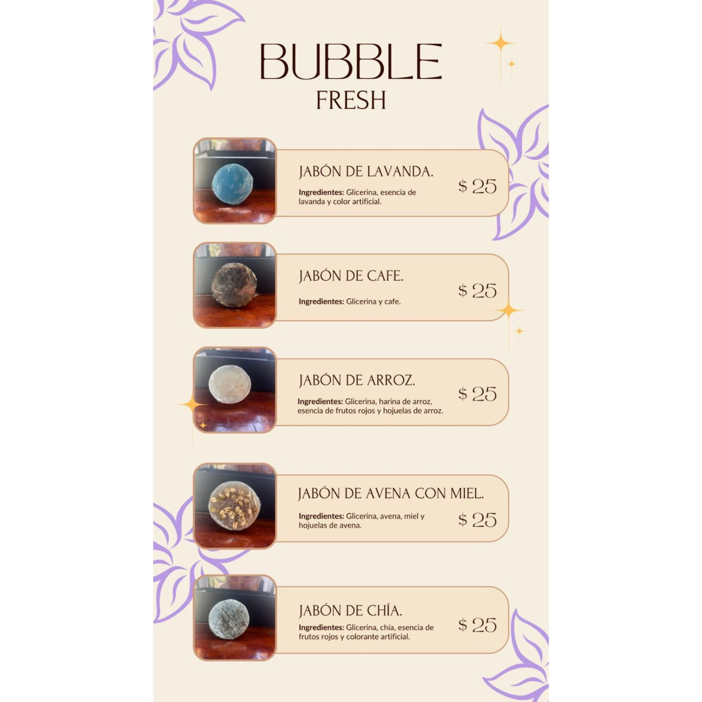

Jabón Artesanal

Ingredientes: 1 kg Glicerina en barra de ámbar y aceite de coco, 5 gotas de esencia de lavanda ( o de tu preferencia), específicamente para jabones, Arroz molido (o del cereal, semilla de tu preferencia), Colorante para jabones (color de tu preferencia), Alcohol en spray.
Instrumentos a utilizar: Molde redondo o cuadrado de silicona, 1 Vaso medidor de onzas. 1 Cuchillo, 1 Cuchara, 1 Tabla para cortar, 1 Recipiente de plástico, Papel Film.
Elaboración: Nuestros jabones se elaboran mediante un proceso artesanal que conserva las propiedades naturales de los ingredientes.
Uso: Ideal para hidratar y proteger tu piel, además de ser una excelente opción para regalos únicos y especiales.